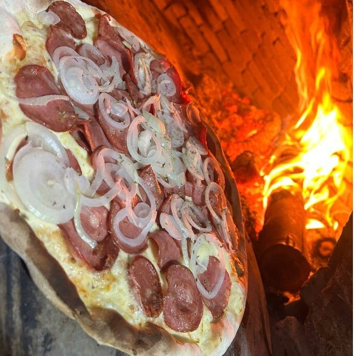

Pizza
43 sabores, três tamanhos
- Pequena 4 fatias · 1 sabor
- Média 6 fatias · até 2 sabores
- Grande 8 fatias · 35 cm · até 2 sabores
Borda fina e crocante, ou recheada de cheddar, Catupiry Original ou mussarela.
Ver os sabores